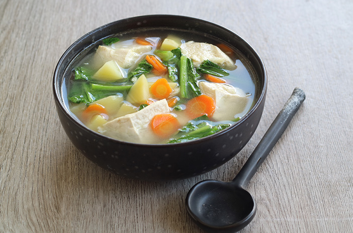

Selamat Datang di Dunia Resep
Tentang Kami
Selamat datang di situs resep kami! Di sini, Anda akan menemukan berbagai macam resep lezat dan mudah dibuat untuk memuaskan selera Anda dan keluarga.
Kami menyediakan resep-resep tradisional Indonesia hingga masakan internasional yang telah kami kumpulkan dan uji coba. Setiap resep dilengkapi dengan langkah-langkah yang jelas dan mudah diikuti.
Mengapa Memilih Kami?
- Resep yang mudah diikuti
- Bahan-bahan yang mudah didapat
- Variasi masakan yang beragam
- Tips dan trik memasak dari para ahli
Jelajahi halaman Resep kami untuk memulai petualangan kuliner Anda!
Daftar Resep

Nasi Goreng
Deskripsi: Nasi goreng adalah hidangan nasi yang digoreng dengan berbagai bahan tambahan.
Langkah-langkah:
- Panaskan minyak dalam wajan.
- Tumis bawang putih hingga harum.
- Tambahkan nasi dan kecap manis, aduk rata.
- Masukkan telur orak-arik, aduk hingga matang.

Ayam Bakar
Deskripsi: Ayam bakar yang dibumbui dengan rempah-rempah khas, sempurna untuk acara keluarga.
Langkah-langkah:
- Marinasi ayam dengan bumbu selama 30 menit.
- Panggang ayam di atas bara api hingga matang.
- Sajikan dengan sambal dan nasi putih.

Sup Sayur
Deskripsi: Sup sayur segar yang kaya akan gizi dan mudah dibuat.
Langkah-langkah:
- Rebus air dalam panci.
- Masukkan sayuran dan bumbu, masak hingga sayuran empuk.
- Sajikan hangat dengan nasi.